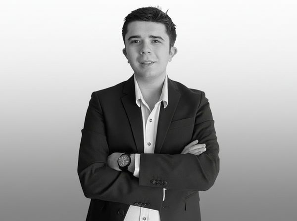

Nolan Bayon
BIM modeleur et architecte d'intérieur
Je modélise bâtiments et réseaux en BIM chez EPI, bureau d'études fluides, et je conçois des espaces intérieurs. Bi-cursus CESI et ENSA Paris-La Villette.
Parcours

- Poste
- Apprenti BIM modeleur, EPI
- Distinction
- WorldSkills Île-de-France 2025, 4e place en construction digitale
- Base
- Paris, Île-de-France
BIM modeleur en alternance chez EPI depuis 2024, je produis des maquettes multi-lots (architecture, structure, CVC, plomberie, électricité), je modélise à partir de nuages de points et je participe aux audits de maquettes. Ma formation en architecture d'intérieur me donne le goût de l'espace, du détail et de l'aménagement. Je prépare actuellement mon projet de fin d'études : une bibliothèque d'objets BIM pour standardiser et accélérer la modélisation des sous-stations.
Outils et compétences
BIM
- Revit (certification CESI)
- Navisworks
- Solibri
- ReCap
- TruView
- Autodesk Construction Cloud
- DiRoots
- Scan-to-BIM (nuages de points)
Conception 3D et CAO
- AutoCAD
- SketchUp
- Rhinoceros
Rendu et graphisme
- V-Ray
- Vizcom
- Photoshop
- Illustrator
- InDesign
- Pack Office
Langues
- Anglais (B1)
- Espagnol (B1)
Projets
Projets d'école et projets personnels, de la modélisation Revit au rendu. Cliquez sur un projet pour voir sa description et toutes ses images.
Diplômes et certifications
Travaillons ensemble
Apprenti BIM modeleur chez EPI jusqu'en 2027. Ouvert aux échanges sur l'architecture intérieure, la modélisation BIM et le scan-to-BIM.
- linkedin.com/in/nolan-bayon
- Localisation
- Île-de-France